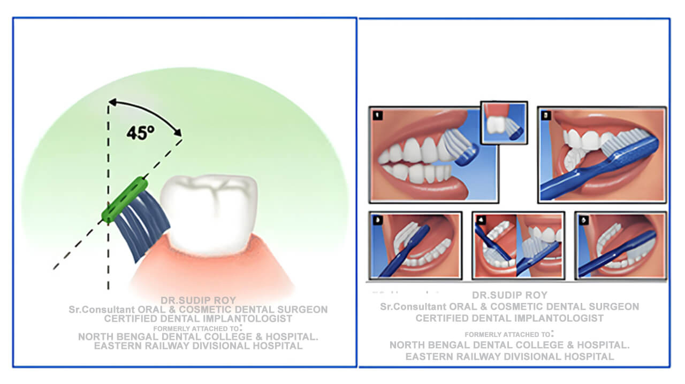
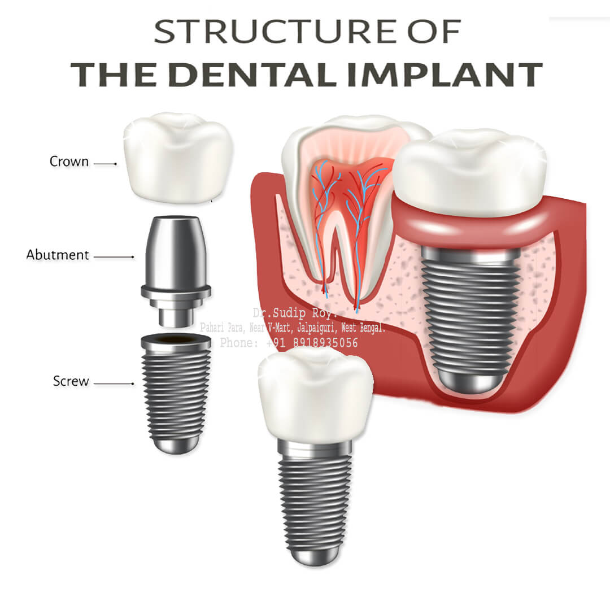

Dental FAQ Library
ডেন্টাল প্রশ্নোত্তর লাইব্রেরি
डेंटल प्रश्नोत्तर लाइब्रेरी
Senior Consultant Dr. Sudip Roy – Oral & Cosmetic Surgeon
1. General Symptoms & Hygiene
1. What causes bad breath even after brushing?
১. ব্রাশ করার পরেও মুখে দুর্গন্ধ থাকে কেন?
1. ब्रश करने के बाद भी सांसों में बदबू क्यों आती है?
Persistent bad breath may be caused by bacteria buildup on the tongue or underlying gum issues. Clinical evaluation is recommended.
মুখে দুর্গন্ধের জন্য জিভে জমে থাকা ব্যাকটেরিয়া বা মাড়ির সমস্যা দায়ী হতে পারে।
सांसों की बदबू मसूड़ों की समस्या या जीभ पर बैक्टीरिया के कारण हो सकती है।
2. Why do my teeth feel sensitive to cold?
২. দাঁত শিরশির করে কেন?
2. दांतों में झनझनाहट क्यों होती है?
Sensitivity often occurs when enamel wears down. A dental examination may help determine if the dentin is exposed.
দাঁতের এনামেল ক্ষয় হয়ে গেলে শিরশিরানি অনুভূত হতে পারে।
इनेमल घिसने के कारण दांतों में संवेदनशीलता महसूस होती है।
3. Why do my gums bleed while brushing?
৩. ব্রাশ করার সময় মাড়ি দিয়ে রক্ত পড়ে কেন?
3. ब्रश करते समय मसूड़ों से खून क्यों आता है?
Bleeding is usually a sign of gum inflammation. Early care can help reverse the condition.
মাড়ি থেকে রক্ত পড়া প্রদাহের প্রাথমিক লক্ষণ। সঠিক সময়ে ব্যবস্থা নেওয়া জরুরি।
मसूड़ों से खून आना मसूड़ों की सूजन का संकेत है।
4. Is dry mouth a serious problem?
৪. মুখ শুকিয়ে যাওয়া কি কোনো সমস্যা?
4. क्या मुँह सूखना कोई समस्या है?
Chronic dry mouth can increase the risk of decay. Evaluation of the cause is essential.
মুখ শুকিয়ে থাকলে ক্যাভিটি দ্রুত ছড়ায়। এর কারণ খুঁজে বের করা জরুরি।
मुँह सूखने से दांतों में सड़न हो सकती है।
5. What causes white spots on teeth?
৫. দাঁতে সাদা দাগ কেন হয়?
5. दांतों पर सफेद धब्बे क्यों होते हैं?
White spots can be signs of early decay or mineral loss. A professional checkup can help evaluate the enamel.
সাদা দাগ এনামেলের মিনারেল ক্ষয়ের লক্ষণ হতে পারে।
सफेद धब्बे दांतों के इनेमल के खराब होने का संकेत हो सकते हैं।
2. Pain & Clinical Concerns

6. Why does tooth pain increase at night?
৬. রাতে দাঁতের ব্যথা বাড়ে কেন?
6. रात में दांत का दर्द क्यों बढ़ जाता है?
Lying down increases head blood flow, which can raise pressure in an infected tooth. Evaluation is necessary.
শুয়ে থাকলে দাঁতের স্নায়ুর ওপর চাপ বাড়ে, যার ফলে ব্যথা তীব্র অনুভূত হয়।
सोते समय सिर में रक्तचाप बढ़ने से दर्द बढ़ जाता है।
7. What should I do if my gums swell suddenly?
৭. হঠাৎ মাড়ি ফুলে গেলে কী করা উচিত?
7. अचानक मसूड़े सूजने पर क्या करें?
Sudden swelling may be associated with an infection. Prompt professional assessment is advised.
হঠাৎ মাড়ি ফোলা সংক্রমণের লক্ষণ। দেরি না করে ডেন্টিস্ট দেখানো উচিত।
अचानक सूजन इन्फेक्शन का संकेत है। इसकी जांच करानी चाहिए।
8. Is a loose tooth in an adult an emergency?
৮. বড়দের দাঁত নড়ে যাওয়া কি জরুরি সমস্যা?
8. क्या वयस्कों में दांत का हिलना एक आपातकालीन स्थिति है?
Yes. A loose permanent tooth can indicate gum disease or injury and requires immediate evaluation.
হ্যাঁ, বড়দের স্থায়ী দাঁত নড়ে যাওয়া মাড়ির রোগের লক্ষণ।
हाँ, यह मसूड़ों की बीमारी का संकेत हो सकता है।
9. Why do I feel a clicking sound in my jaw?
৯. চোয়ালের হাড়ে শব্দ হয় কেন?
9. जबड़े में आवाज क्यों आती है?
Jaw clicking can be related to TMJ issues. An examination can help assess jaw joint function.
চোয়ালের জয়েন্টে সমস্যার কারণে এমন শব্দ হতে পারে।
यह जबड़े के जोड़ (TMJ) की समस्या हो सकती है।
10. What causes sharp pain when biting down?
১০. খাবার কামড়ানোর সময় তীব্র ব্যথা হয় কেন?
10. काटते समय तेज दर्द क्यों होता है?
Sharp pain can indicate a cracked tooth or a deep cavity. Clinical testing is required.
দাঁতে ফাটল বা গভীর ক্যাভিটির কারণে এমন ব্যথা হতে পারে।
यह दांत में दरार या गहरी सड़न का संकेत हो सकता है।
Need a Professional Evaluation?
আপনার কি বিশেষজ্ঞের পরামর্শ প্রয়োজন?
क्या आपको विशेषज्ञ की सलाह चाहिए?
Consult with Dr. Sudip Roy (27+ years experience) for a precise diagnosis.
📅 Book Appointment Now 📅 অ্যাপয়েন্টমেন্ট বুক করুন 📅 अपॉइंटमेंट बुक करें3. Cleaning & Prevention

11. Does dental scaling loosen teeth?
১১. স্কেলিং করলে কি দাঁত নড়ে যায়?
11. क्या स्केलिंग से दांत ढीले हो जाते हैं?
No. Scaling removes harmful tartar. It does not weaken the tooth structure.
না। স্কেলিং পাথর পরিষ্কার করে, দাঁত দুর্বল করে না।
नहीं। स्केलिंग केवल गंदगी साफ करती है।
12. How often should I change my toothbrush?
১২. কতদিন অন্তর ব্রাশ বদলানো উচিত?
12. टूथब्रश कब बदलना चाहिए?
Replacing your toothbrush every 3 months is recommended for effective cleaning.
প্রতি ৩ মাস অন্তর ব্রাশ বদলানো উচিত।
हर 3 महीने में टूथब्रश बदलें।
13. Is flossing really necessary?
১৩. ফ্লস করা কি সত্যিই জরুরি?
13. क्या फ्लॉसिंग वाकई जरूरी है?
Yes. Flossing removes plaque from areas a brush cannot reach, preventing interdental decay.
হ্যাঁ। দুই দাঁতের মাঝখানের ময়লা পরিষ্কার করতে ফ্লস অত্যন্ত জরুরি।
हाँ। यह दांतों के बीच की गंदगी साफ करता है।
14. Does sugar directly cause cavities?
১৪. মিষ্টি খেলে কি সরাসরি ক্যাভিটি হয়?
14. क्या चीनी से कैविटी होती है?
Sugar feeds acid-producing bacteria that wear down enamel. Limiting sugar protects teeth.
মিষ্টি থেকে তৈরি অ্যাসিড দাঁতের এনামেল ক্ষয় করে।
चीनी से बनने वाला एसिड इनेमल को खराब करता है।
15. Is charcoal toothpaste safe for daily use?
১৫. চারকোল টুথপেস্ট কি প্রতিদিন ব্যবহার করা যায়?
15. क्या चारकोल टूथपेस्ट सुरक्षित है?
Abrasive toothpastes can wear down enamel over time. Gentler alternatives are often safer.
বেশি খসখসে টুথপেস্ট দাঁতের ক্ষতি করতে পারে।
अधिक अपघर्षक टूथपेस्ट इनेमल को नुकसान पहुँचा सकते हैं।
4. Advanced Care & Procedures

16. How long do dental implants last?
১৬. ডেন্টাল ইমপ্ল্যান্ট কতদিন থাকে?
16. डेंटल इम्प्लांट कितने समय तक चलते हैं?
With proper care, implants are designed to be a long-term solution for missing teeth.
সঠিক যত্নে ইমপ্ল্যান্ট অনেক বছর স্থায়ী হতে পারে।
सही देखभाल के साथ इम्प्लांट लंबे समय तक चलते हैं।
17. Can gum disease affect my heart health?
১৭. মাড়ির রোগ কি হার্টের ক্ষতি করে?
17. क्या मसूड़ों की बीमारी दिल को प्रभावित कर सकती है?
Research suggests a link between oral infections and systemic health. Maintaining oral health is essential.
মাড়ির সংক্রমণের সাথে শরীরের অন্যান্য অঙ্গের সমস্যার যোগসূত্র আছে।
मसूड़ों का संक्रमण हृदय स्वास्थ्य को प्रभावित कर सकता है।
18. Are dental X-rays safe?
১৮. ডেন্টাল এক্স-রে কি নিরাপদ?
18. क्या डेंटल एक्स-रे सुरक्षित हैं?
Modern digital X-rays involve minimal radiation and are essential for diagnosis.
আধুনিক ডিজিটাল এক্স-রে তে রেডিয়েশন অত্যন্ত কম এবং এটি নিরাপদ।
आधुनिक डिजिटल एक्स-रे सुरक्षित हैं।
19. Do wisdom teeth always need removal?
১৯. আক্কেল দাঁত কি সব সময় তুলে ফেলা দরকার?
19. क्या अक्ल दाढ़ निकालना हमेशा जरूरी है?
Only if they are impacted or causing pain. Evaluation determines the best course.
ব্যথা বা সমস্যা হলে আক্কেল দাঁত তোলা প্রয়োজন হয়।
केवल दर्द या समस्या होने पर ही इसे निकालना पड़ता है।
20. What is the difference between a crown and a veneer?
২০. ক্রাউন এবং ভিনিয়ার এর মধ্যে পার্থক্য কী?
20. क्राउन और विनियर में क्या अंतर है?
Veneers cover the front surface for aesthetics, while crowns encase the entire tooth for strength.
ভিনিয়ার কেবল সামনের অংশ ঢাকে, ক্রাউন পুরো দাঁতকে সুরক্ষা দেয়।
विनियर सामने के हिस्से को ढकता है, क्राउन पूरे दांत को सुरक्षा देता है।
Still have questions? Let's discuss them in person.
CONFIRM APPOINTMENT & VISIT CLINICDisclaimer: Educational purposes only. This content does not replace a professional dental examination or diagnosis by a qualified clinician.
Last Reviewed: Jan 2, 2026 | Dr. Sudip Roy